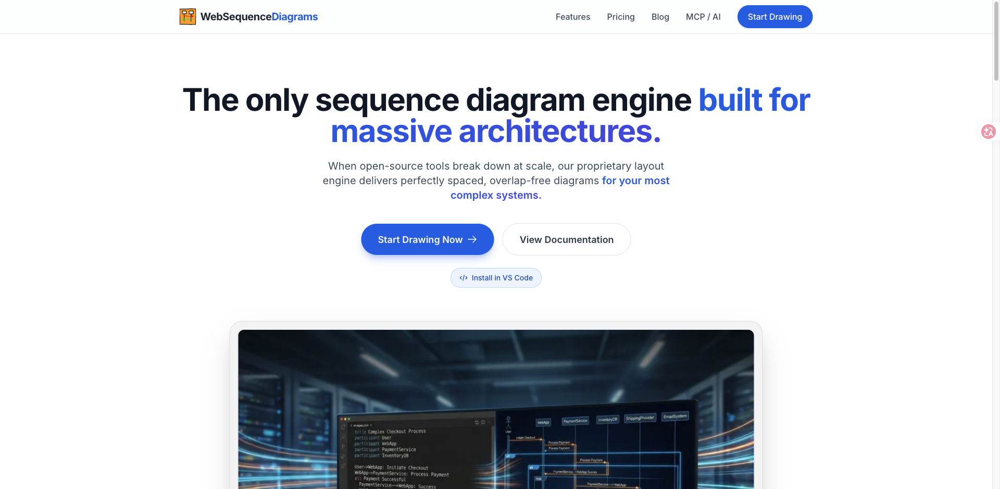

专门只做时序图的老牌文本渲染器 —— 卖点不是图型多，是几十条生命线也不交叉。
左边是它的输入语法，右边是渲染结果 —— 六个参与者、两个嵌套块
title Checkout — create order participant Client participant LB participant Auth participant Order participant Payment participant DB Client->LB: POST /checkout loop [retry < 3] LB->Auth: verify(session) Auth-->LB: 200 · user, scope LB->Order: createOrder(cart) Order->Payment: authorize(amount) Payment->DB: INSERT txn(pending) DB-->Payment: txn_id end alt [paid] Order-->LB: 201 { orderId } LB-->Client: 201 Created else [timeout] Order->DB: UPDATE status=EXPIRED LB-->Client: 409 payment_timeout end
WebSequenceDiagrams 的视觉语言非常“工程制图”：纯白底、黑色细实线表示同步调用、虚线箭头表示返回、浅蓝灰激活条、深蓝 #1f4e79 只用在块标签和标题栏。没有阴影、没有圆角、没有渐变 —— 它把自己当成图纸而不是海报。

一个只做时序图的在线渲染器。你写 participant / -> / loop / alt 这类纯文本，它把文本排成时序图。历史很长，是这一类工具里最早的一批。
除了 Web 编辑器，它还有官方 VS Code 扩展、AI 语法生成，以及一个不太常见的功能：导入 HAR 文件，把真实的 HTTP 调用链直接画成时序图。